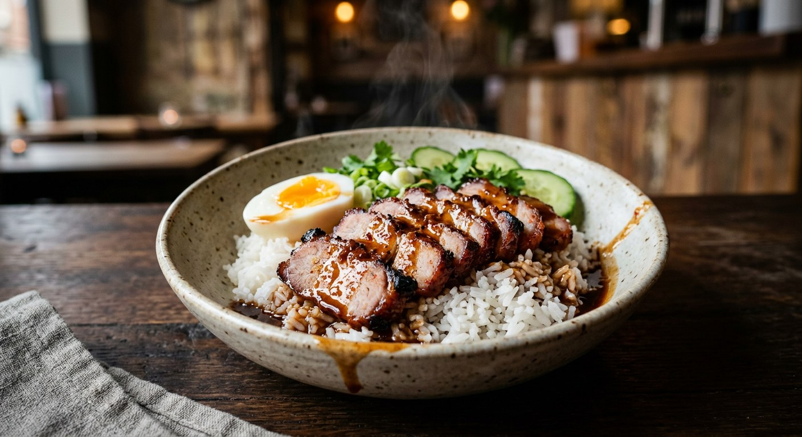

Pork neck lacquered red with honey, five-spice and soy, roasted and sliced over jasmine rice, drowned in a gravy built from its own marinade — with the red-tinted egg and the black-soy chilli dip on the side.

ข้าวหมูแดง is simply ข้าว, rice, and หมูแดง, red pork — no curry, no garnish, nothing to hide behind. The red pork is the Thai descendant of Cantonese char siu, but the plate it sits on is unmistakably Thai: the pork is sliced over steamed rice and lacquered with น้ำราด, a gravy made from the marinade it cooked in, and an old-style plate — GopOpOp's Wongnai recipe is firm on this — must come with a ไข่ยางมะตูมสีแดง, a soft-centred egg dyed red through the rim.
Every Thai source builds the dish the same way: the marinade does triple duty. It colours and flavours the pork, it bastes it in the oven, and its leftovers become the gravy. Nothing is wasted, which is why Pantip's ครัวบ้านทราย insists the longer the pork sits in the marinade, the better the plate — and why she says one day is a starting point, not a maximum.
This is street food that crossed over. TrueID's version is titled สูตรทำขาย — the sell-at-market recipe — with the maths for a stall worked out, and Wongnai's calls it a dish everyone has eaten since childhood. Yet every recipe insists it is easy at home: one marinade, one roast, one pot of gravy.
| Thai | English | Amount |
|---|---|---|
| สันคอหมู | Pork neck (collar), cut into long strips | 1 kg |
| รากผักชี กระเทียม พริกไทย | Coriander roots, garlic, white pepper — pounded (สามเกลอ) | 3 roots, 5 cloves, 1 tbsp |
| ขิง | Ginger, pounded | 15 g |
| ผงพะโล้ | Five-spice powder | 1 tbsp |
| เต้าหู้ยี้ | Fermented tofu | 1 cube (optional) |
| น้ำตาลทราย | Sugar | 3 tbsp |
| น้ำผึ้ง | Honey | 3 tbsp |
| ซีอิ๊วขาว | Light soy sauce | 3 tbsp |
| น้ำมันหอย | Oyster sauce | 3 tbsp |
| น้ำมันงา | Sesame oil | 2 tbsp |
| สีผสมอาหาร | Red-orange food colouring | ¼ tsp |
| น้ำหมักที่เหลือ | Leftover marinade and roasting juices (for the gravy) | all of it |
| แป้งมัน | Tapioca starch, slaked in water | 1–2 tbsp |
| งาขาวคั่ว | Toasted sesame seeds | 2 tbsp |
| ไข่ไก่ | Eggs (for the red eggs) | 2–4 |
| กุนเชียง | Chinese sausage, fried (optional) | 1 pair |
| แตงกวา | Cucumber, sliced | ½ |
| ต้นหอม ผักชี | Spring onion and coriander | a handful |
| ข้าวสวย | Steamed jasmine rice | 4 portions |
The dip (น้ำจิ้ม), Pantip's proportions: 1 tbsp light soy, 3 tbsp vinegar, 2 tbsp dark soy, 1 tbsp sugar, a pinch of salt, ½ sliced spur chilli — stirred until dissolved, chillies last. GopOpOp pickles hers 15 minutes so the chilli heat soaks in. Wongnai's pot: 1 kg pork tenderloin with 80 g ready-made red-pork marinade powder, evaporated milk and oyster sauce — pressure-cooked 30 minutes, seared for colour, gravy thickened with สามเกลอ and coconut sugar. Krua's market gravy: 8 cups pork stock, peanuts, fried shallots and garlic, black soybean paste — the rich stall version. TrueID's stall recipe: 1.5 kg pork in 250 g sugar, marinaded 12–24 hours, air-roasted 40 minutes at 180 °C, gravy finished with tomato ketchup.
The cut. Pork neck (สันคอ) is the majority choice — Kapook, Pantip, Krua and TrueID's option list all lead with it, because its fat keeps the meat juicy through a hot roast. Wongnai alone uses tenderloin (สันใน), compensating with evaporated milk in the marinade and a pressure cooker. TrueID's stall recipe also allows hip or loin.
The marinade, from scratch or from a packet. Kapook, Pantip and TrueID build theirs from five-spice, honey and the สามเกลอ paste; Wongnai and Krua start from ready-made red-pork marinade powder (ผงหมักหมูแดง). Pantip adds fermented tofu and an egg; Krua adds a spoon of Chinese cooking wine; Wongnai's evaporated milk is its own tenderness trick.
The cook. Four of the six roast — Pantip at 200 °C turning every ten minutes, Krua and TrueID at 180 °C, Kapook in whichever oven exists. Wongnai braises under pressure for 30 minutes and only sears the meat afterwards for colour. The braise is softer; the roast gets a lacquered edge.
The red, and how deep it goes. Everyone colours the pork — and the old-style egg is dyed overnight so the colour soaks into the white, GopOpOp's 5 mm red rim. Kapook's shortcut is a quick roll of the hard egg in colouring water, colour on the surface only. Both are called the same dish.
The gravy. The common core — leftover marinade and drippings, strained, thickened with starch and finished with toasted sesame — appears in Kapook, Pantip, Wongnai, TrueID and GopOpOp. Krua's popular gravy is a different creature: eight cups of pork stock with peanuts, fried shallots and garlic, and black soybean paste, closer to what a big stall ladles. TrueID stirs in tomato ketchup; Wongnai adds the สามเกลอ and coconut sugar; GopOpOp drops in a seasoning cube.
The dip. Four of the six — Pantip, TrueID, Krua and GopOpOp — serve the black-soy vinegar dip with sliced spur chillies. Kapook and Wongnai's recipe omit it entirely. The old-style plate has it; the home plate survives without it.
The marinade time. Kapook says two hours will do; Wongnai agrees at one to two. TrueID demands 12–24 hours. Pantip is the purist: at least a day, and longer only helps.
This recipe is translated from the following Thai-language sources. Where they disagree, we've said so.
1. Kapook Cooking — "ข้าวหมูแดง สูตรทำง่าย หอมนุ่ม หวานน้ำราดอร่อยเต็มคำ" (the Pantip home recipe by คุณ shintaro) — cooking.kapook.com
2. Wongnai — "วิธีทำ 'ข้าวหมูแดง' เมนูหมูยอดฮิต สูตรหมูนุ่มพร้อมน้ำราดรสเข้มข้น" by น้องแปะก๊วย (the pressure-cooker pot) — wongnai.com
3. TrueID Food — "วิธีทำ ข้าวหมูแดง สูตรทำขาย บอกละเอียด ทำกินอร่อย ทำขายปัง!" (the market-stall recipe) — food.trueid.net
4. Pantip — "วิธีทำข้าวหมูแดง น้ำราดหมูแดง น้ำจิ้มหมูแดง ครบสูตร ง่าย" by ครัวบ้านทราย (the recipe used here) — pantip.com
5. KRUA.CO — "ข้าวหมูแดง by KRUA.CO" (สำนักพิมพ์แสงแดด; the rich peanut-and-stock gravy) — krua.co
6. Wongnai — "สูตร ข้าวหมูแดง สไตล์โบราณ" by GopOpOp (the old-style red egg technique) — wongnai.com